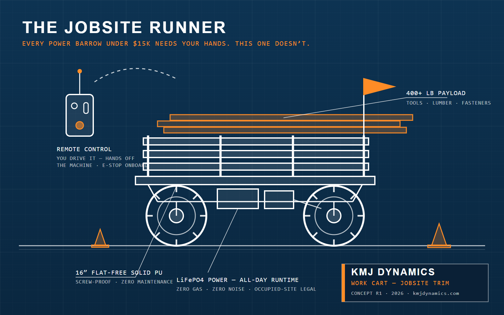

Every power barrow under $15,000 makes you hold the handles. This one is remote control — you drive it from the transmitter while you walk beside it or ahead of it, hauling 400+ lb of tools and material without a hand on the machine.

I'm a construction PM. I built this cart to haul my family's gear across beach sand — a million people watched it drive itself on TikTok. Then I looked around my own jobsites and realized the same machine solves a bigger problem: long carries burn loaded labor-hours, and overexertion injuries are the #1 workplace injury cost in the country.
Power buggies rent for $95–230/day — a season of rental days pays for the cart. Save one loaded laborer-hour a day and it pays back even faster. And overexertion injuries cost US construction $13.7 billion a year; one avoided back strain covers five of these machines. Expected price: $6,495–6,995 hand-built (estimate until the first batch is finalized) — and Section 179 typically lets a profitable contractor expense the full amount in year one.
It's not a concrete buggy. Pallet-quantity masonry and deep mud want a tracked machine — if that's your work, buy the tracked machine. This is the runner: the cart that saves your crew a hundred trips a week on finished ground, indoors, and across long flat carries where gas can't go.
The home page has the beach cart that started it all — the viral videos, the engineering write-up, and the interactive 3D model. Builders: the AUTO-CART build guide is available now.